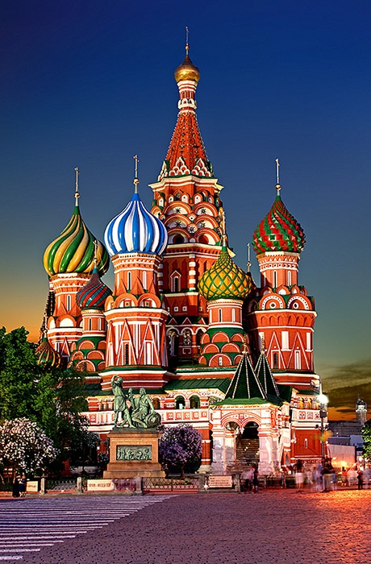
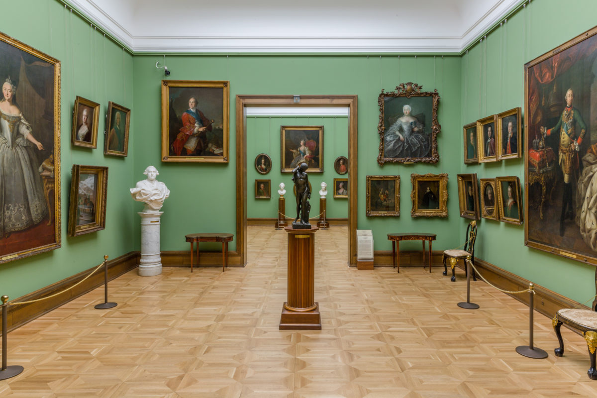
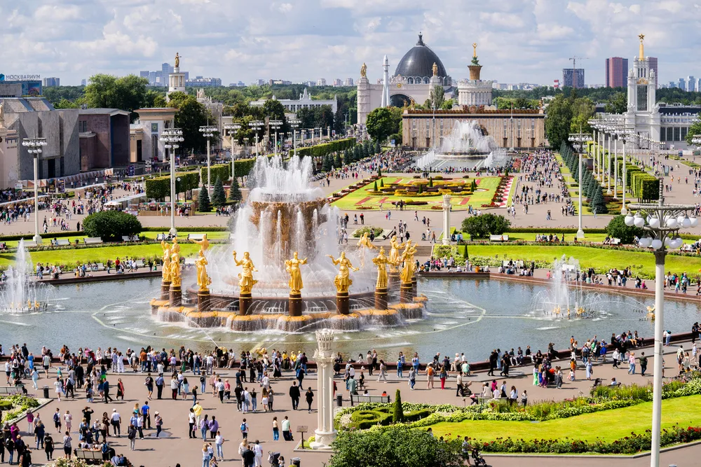
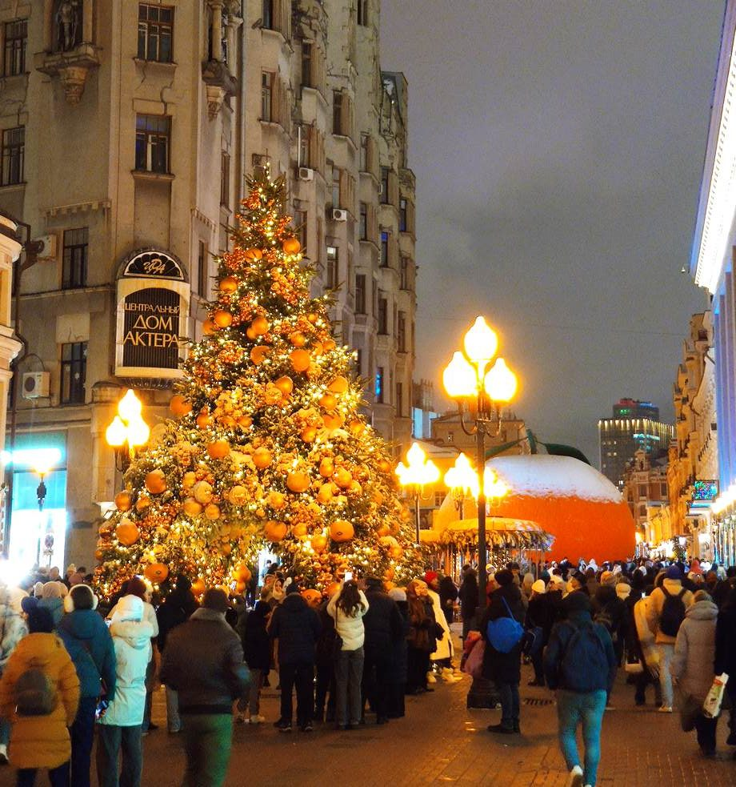
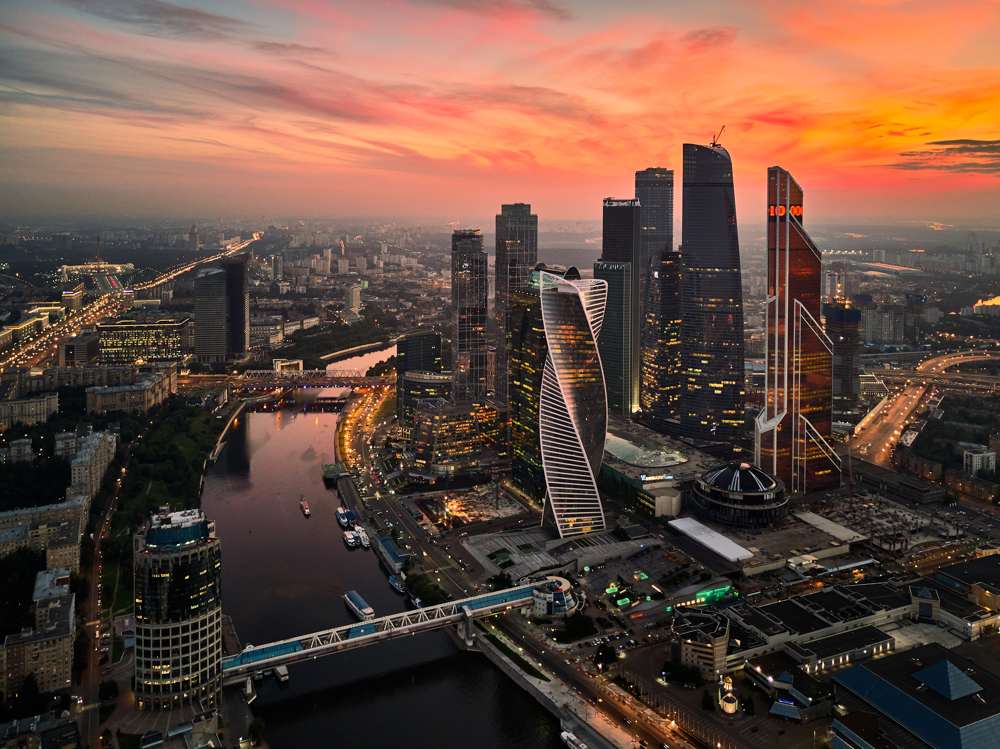

Moscow has hundreds of landmarks. These five cover the full range — from
a 16th-century cathedral to a glass skyscraper district — and together
they give a fair picture of what the city is.
The Places

St. Basil's Cathedral — the postcard image of Moscow.
Red Square & St. Basil's Cathedral
The historic heart of the city. Red Square has been the stage for
coronations, parades, and public life for centuries. At its southern
end stands St. Basil's Cathedral, built in 1555–1561
for Ivan the Terrible — those swirling, painted onion domes are
unlike anything else in the world.
Type: Historic square & cathedral
Best time: early morning, before the crowds
Don't miss: the view from the bridge over the Moskva River

The Tretyakov Gallery — Russian art, ten centuries deep.
Tretyakov Gallery
The world's best collection of Russian fine art,
from medieval icons to 20th-century painting. Founded by the merchant
Pavel Tretyakov, who donated his private collection to the city. If
you only see one museum in Moscow, make it this one.
Type: Art museum
Best time: weekday mornings
Don't miss: the Rublev icon room and the Vrubel hall

VDNKh — Soviet-era pavilions, now a public park.
VDNKh
Vystavka Dostizheniy Narodnogo Khozyaystva — the Exhibition
of Achievements of the National Economy. A vast park of monumental
Soviet pavilions, fountains, and gardens. Today it's a mix of
museums, markets, and open space — and it hosts one of the best
ice-skating rinks in winter.
Type: Park, exhibition centre
Best time: summer evenings or winter for the ice rink
Don't miss: the Friendship of Peoples fountain

Old Arbat — Moscow's most famous pedestrian street.
Old Arbat
A pedestrian street in the historic centre, lined with 19th-century
buildings, cafés, bookshops, and street musicians. It has been
associated with artists and writers for two centuries — Pushkin
lived here. Good for an afternoon walk, a coffee, and a bit of
souvenir shopping.
Type: Pedestrian street
Best time: weekends, when the street performers are out
Don't miss: the wall of Viktor Tsoi, a tribute to the rock legend

Moscow City — the new skyline of the capital.
Moscow City
The Moscow International Business Center — a cluster of
glass skyscrapers on the riverbank, some of the tallest buildings
in Europe. It's a stark, modern counterpoint to the historic centre.
Several towers have observation decks and rooftop restaurants with
panoramic views.
Type: Business district, skyline
Best time: evening, for the lights
Don't miss: the observation deck of the Federation Tower
At a Glance
Quick comparison of the five places
Place
Type
Best time
Cost
Red Square & St. Basil's
Historic landmark
Early morning
Free (cathedral ticketed)
Tretyakov Gallery
Art museum
Weekday morning
Ticketed
VDNKh
Park / exhibition centre
Summer evening
Free entry
Old Arbat
Pedestrian street
Weekend afternoon
Free
Moscow City
Business district
Evening
Free (observation deck ticketed)
One Practical Tip
All five places are connected by the Moscow Metro, which
is fast, cheap, and worth using for the stations alone — several of them
are essentially museums underground. Buy a Troika card at any
station and you're set for the whole trip.